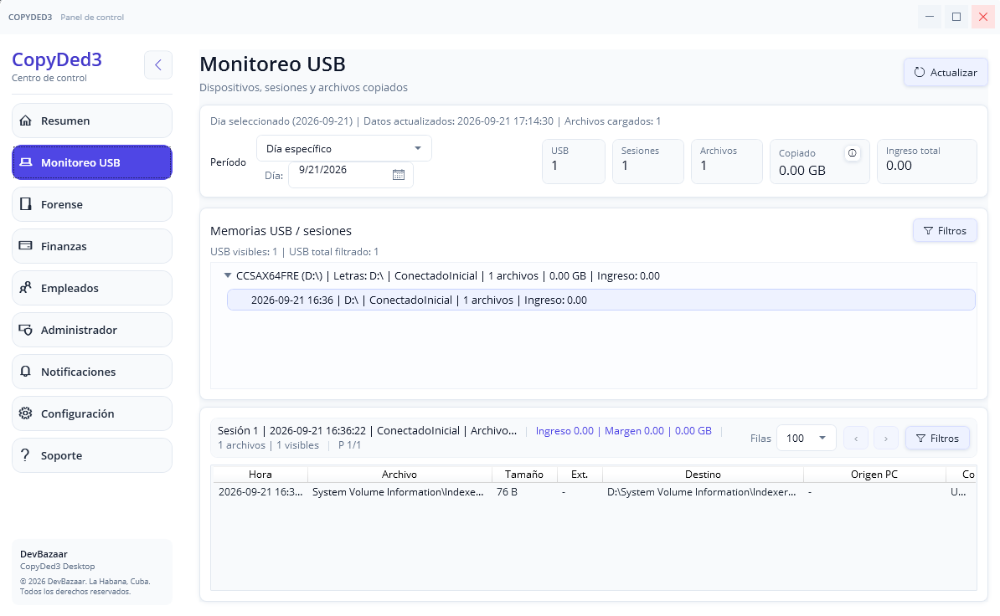
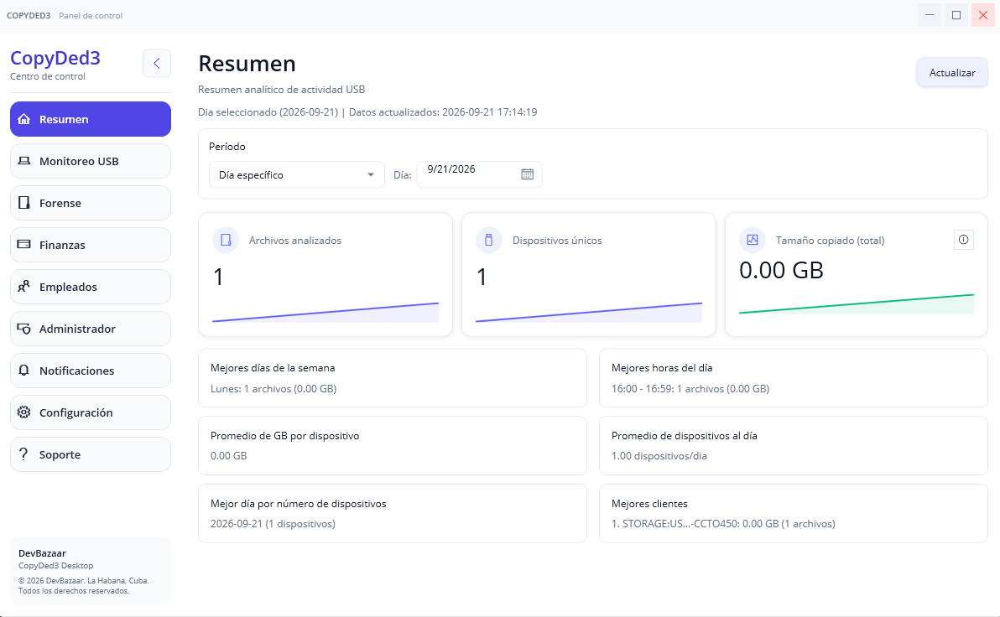
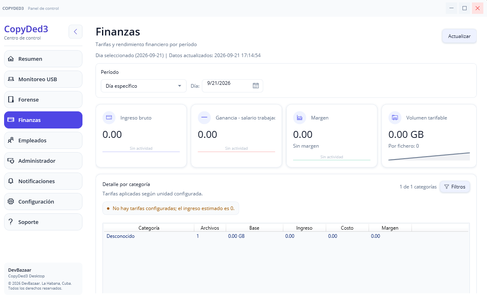

◈
Monitoreo USB
Consulta dispositivos, sesiones y archivos registrados, con fecha, tamaño, destino, origen disponible y confianza de detección.
- Dispositivos y sesiones
- Archivos y operaciones
- Filtros y búsqueda
CopyDed3 ayuda a supervisar dispositivos externos, registrar actividad de archivos, aplicar políticas USB y analizar evidencia histórica disponible en Windows.

CopyDed3 reúne monitoreo, control, analítica y evidencia en una interfaz pensada para operaciones reales.
Consulta dispositivos, sesiones y archivos registrados, con fecha, tamaño, destino, origen disponible y confianza de detección.
Define políticas para permitir, bloquear o autorizar memorias USB usando identificadores del dispositivo.
Visualiza volumen copiado, dispositivos únicos, actividad por día y hora y métricas operativas.
Centraliza advertencias, bloqueos, eventos de seguridad y mensajes relevantes del sistema.
Administra empleados, turnos, categorías, tarifas, reglas de exclusión y estado de servicios.
Convierte la actividad registrada en estimaciones de volumen tarifable, ingresos, costos y margen.
El panel de Resumen convierte los registros en indicadores que pueden consultarse por día, semana, mes o rango personalizado.

El módulo Forense analiza los artefactos históricos que Windows todavía conserva y los combina con registros confirmados por CopyDed3.
La interfaz no necesita permanecer abierta para que el servicio mantenga el monitoreo.

Configura categorías de origen y tarifas por GB, MB o archivo para obtener estimaciones operativas de ingreso, costo y margen.
La disponibilidad de datos históricos depende de los artefactos que Windows conserve y de su configuración previa. Una creación, modificación o acceso histórico no demuestra por sí solo que un archivo haya sido copiado. CopyDed3 muestra niveles de confianza y correlación; no pretende sustituir una certificación pericial.
Descubre cómo CopyDed3 puede adaptarse a tu operación.